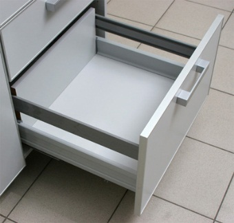
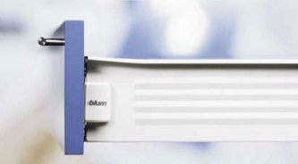

Выдвижные ящики на кухне

Выдвижные ящики это атрибут, без которого сложно представить практически любой вид корпусной мебели. Большие и маленькие вдвижные ящики на кухне призваны облегчить приготовление пищи хорошей организованностью разнообразных кухонных мелочей которые должны быть постоянно под рукой, дабы их не пришлось отрывать из под завалов кухонной техники в больших распашных ящиках. Различные системы выдвижения ящиков призваны облегчить быт простым доступом к необходимым вещам на кухне или в шкафу купе.
Большое множество видом направляющих для ящиков - роликовые, шариковые, частичного или полного выдвижения, меатабоксы (или металлобоксы) - это незаменимая мебельная фурнитура, благодаря которой можно легко и с комфортом использовать внутреннее пространство выдвижных мебельных ящиков. В последние годы наблюдается тенденция к использования механизмов скрытого монтажа с нижним креплением, доводчиком и амортизацией, а также систем push-to-open. Системы направляющих обеспечивают мягкий, тихий ход ящиков полного выдвижения и делают использование мебели более комфортным.
Тенденция ящиков с системами push-to-open в последние пару лет набрала популярности. Система открывания выдвижных ящик и распашных фасадов без ручек с помощью системы push-to-open позволяет сделать интересные проекты в стиле модерн. Такая система, состоящая из направляющих скрытого монтажа для выдвижных ящиков, петель и специальных механизмов которые врезаются в торец ящика, к которому примыкает фасад или являются накладными и крепятся на одну из стенок, автоматически открывающие ящик или фасад при лёгком нажатии. Выдвижные ящики с системой push-to-open легко снимаются в открытом положении - ящик надо всего лишь слегка потянуть вверх, и он снимется с направляющих без усилий.
Метабоксы - это система выдвижных ящиков с металлическими боковинами и часто с металлическим же днищем. Кухонные метабоксы очень практичны – они не подвергаются воздействию попадающей в них воды благодаря белому защитному покрытию. Также метабокс легче, чем ящик из ДСП с такими же размерами. Высокие стенки метабоксов позволяют хранить в выдвижном ящике большой количество не очень тяжёлой кухонной утвари. Также боковины уменьшенной толщины метабокса немного экономят внутренне пространство кухонного ящика. Но метабоксы имеют два минуса – они ограничены заводскими размерами а также не приспособлены выдерживать большую нагрузку Поэтому очень практичным кухонным решением также являются тандембоксы. Это гибрид метабокса и ящика из ДСП. Днище и задняя стенка изготавливаются из ДСП, а боковая стенка из металла и металлических трубок, которые крепятся над металлическими боковинами, что позволят подогнать тандембоксы под любую высоту кухонного ящика. Также тандембоксы выдерживают большие нагрузки в отличие от метабокса и ящика из ДСП.
